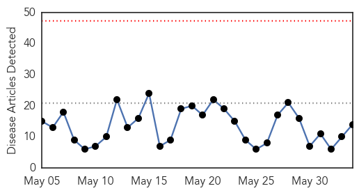
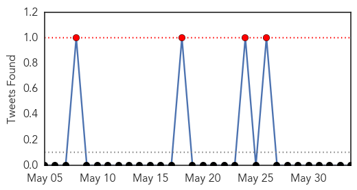
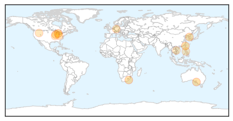
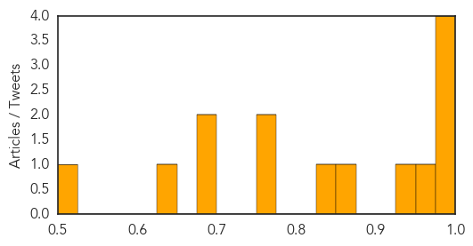

Toggle navigation
Early Warning
Daily Alerts
Influenza
Jun 03, 2015
Compare to:
-
Dengue Fever
Hemmorhagic Fever
Mold/Fungal Infection
Meningitis
Pertussis / Whooping Cough
Middle East Respiratory Syndrome
Cholera
Hepatitis
Chikungunya
Yellow Fever
Bubonic Plague
West Nile Virus
Swine Flu
Ebola
Measles
Unknown
Mumps
30 Day Trends
Web: 0
alerts
, 0
warnings
Twitter: 4
alerts
, 0
warnings
Top Articles:
0.998
MERS Cases Rising in South Korea
0.996
Sickness spikes early this year
0.996
www.cowracommunitynews.com
0.980
Bold new approach needed to defeat rabies
0.972
What Dog Owners Should Know About Dog Flu
0.947
South Koreans Mask Up In The Face Of MERS Scare
0.860
Iowa, Minnesota report more avian flu; bird-show bans spread
0.839
Michigan veterinarians must now report dog flu cases to the state
0.751
June 3, 2015 Archives
0.751
June 2, 2015 Archives
0.686
How doctors choose their doctors
0.684
Agriculture officials ask county fairs to beware of bird flu
0.630
Disease outbreak risks increase in summer
0.501
Five New US Bird Flu Outbreaks Confirmed; More Exhibits Cancelled
Top Tweets:
No tweets found for Jun 03, 2015
Web/News Articles

Tweets

Article Locations

Article Confidences
